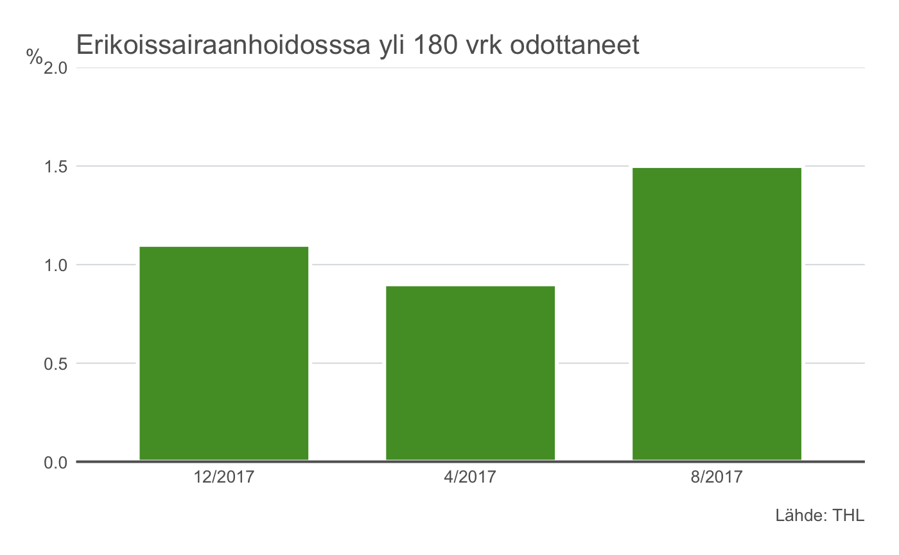
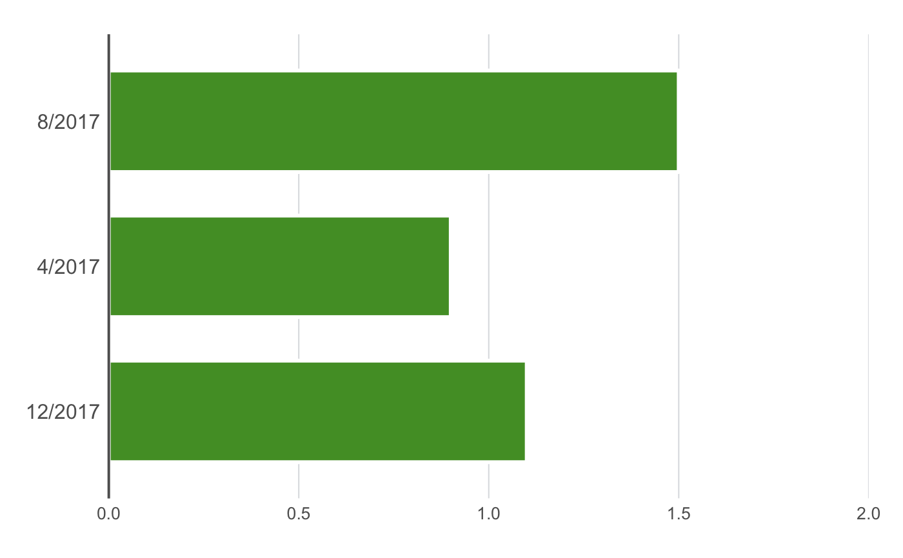

thlBarPlot.RdMake THL bar plots, vertical and horizontal
thlBarPlot(data, xvar, yvar, groupvar = NULL, ylabel = yvar, xlabel = NULL, colors = thlColors(n = 5, type = "quali", name = "bar"), title = NULL, subtitle = NULL, caption = NULL, legend.position = "none", base.size = 16, show.grid.x = FALSE, show.grid.y = TRUE, lang = "fi", ylimits = NULL, xaxis.breaks = waiver(), xaxis.labels = waiver(), yaxis.breaks = waiver(), panels = FALSE, nrow.panels = 1, barwd = 0.7, show.value = FALSE, value.box = FALSE, value.digits = NULL, value.size = thlPtsConvert(9), value.vjust = 0.9, value.hjust = 0.5, horizontal = FALSE, stacked = TRUE, yaxis = TRUE, xaxis = TRUE)
| data | a data frame |
|---|---|
| xvar | variable to be plotted on the x-axis. MUST be character or factor; numeric values cause an error |
| yvar | variable to be plotted on the y-axis. |
| groupvar | grouping variable. Defaults to NULL (no grouping). |
| ylabel | y-axis label. Defaults to yvar. |
| xlabel | x-axis label. Defaults to NULL (omitted). |
| colors | colors to be used. Defaults to THL qualitative color palette for line plots (see |
| title | a character string specifying the title of the plot. |
| subtitle | a charater string specifing the subtitle of the plot. |
| caption | a character string specifying the caption of the plot . |
| legend.position | e.g. "topright", (see |
| base.size | the size of basic text in the plot title, axis labels in PostScript points, defaults to 16. |
| show.grid.x | TRUE/FALSE, defaults to FALSE. |
| show.grid.y | TRUE/FALSE, defaults to TRUE. Set the grid sequence with parameter yaxis.breaks |
| lang | language options for the y-axis labels. Defines the style of big marks and decimal marks (see |
| ylimits | limits for the y-axis |
| xaxis.breaks | a character vector defining the x-axis breaks and tickmarks. Also affects the x-axis grid when it is set to TRUE. To allow automatic calculation, use waiver() |
| xaxis.labels | a character vector defining the x-axis labels. To allow automatic calculation, use waiver(). Set NULL to not show at all. |
| yaxis.breaks | a character vector defining the y-axis breaks and tickmarks. Also affects the y-axis grid when it is set to TRUE. To allow automatic calculation, use waiver() |
| panels | TRUE/FALSE, should multiple graphs be plotted in separate panels? If TRUE, the panels are based on the grouping variable defined by the groupvar -argument. |
| nrow.panels | In how many rows should the panels be plotted? |
| barwd | bar width, default 0.7 |
| show.value | plot y-values or not (TRUE/FALSE) |
| value.box | y-values as text boxes (TRUE/FALSE) |
| value.digits | number of digits when rounding of y-values shown (default is no rounding) |
| value.size | font size for values |
| value.vjust | position of value text or box, default is 0.9 |
| value.hjust | horizontal position of value text or box, default is 0.5 |
| horizontal | set TRUE to get horizontal bars. Default is FALSE (vertical bars) |
| stacked | set TRUE (default) to get stacked bars for groups, FALSE to dodged (side to side) bars |
| yaxis | set FALSE to not show y axis labels. Default is TRUE |
| xaxis | set FALSE to not show x axis line. Default is TRUE |
a ggplot object
data("yli180") yli180$pros <- as.numeric(as.character(yli180$pros)) mycaption <- c(expression(paste(bold("Lähde:"), " THL"))) ## A caption which is partially in bold ## Default, vertical bar plot: thlBarPlot(data = subset(yli180, grepl("2017", kk)), xvar = kk, yvar = pros, ylimits = c(0,2), ylabel = "%", title = "Erikoissairaanhoidosssa yli 180 vrk odottaneet", caption = mycaption)## horizontal bar plot: thlBarPlot(data = subset(yli180, grepl("2017", kk)), xvar = kk, yvar = pros, ylimits = c(0,2), ylabel = "%", horizontal = TRUE)